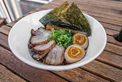

Ramen Caseiro em Japonês 🍜
×
Receita: Ramen Caseiro
Ingredientes (材料 - zairyō):
- 豚骨スープ (tonkotsu sūpu) — Caldo de porco
- 麺 (men) — Macarrão
- 味噌 (miso) — Pasta de soja fermentada
- 卵 (tamago) — Ovo cozido
Modo de Preparo (作り方 - tsukurikata):
- 鍋にスープを入れて沸かします。(Nabe ni sūpu o irete wakashimasu.) — Ferva o caldo na panela.
- 麺を茹でます。(Men o yudemasu.) — Cozinhe o macarrão.
- 器に盛り付けて、卵をのせます。(Utsuwa ni moritsukete, tamago o nosesmasu.) — Sirva em tigela e coloque o ovo por cima.
Assista o passo a passo: